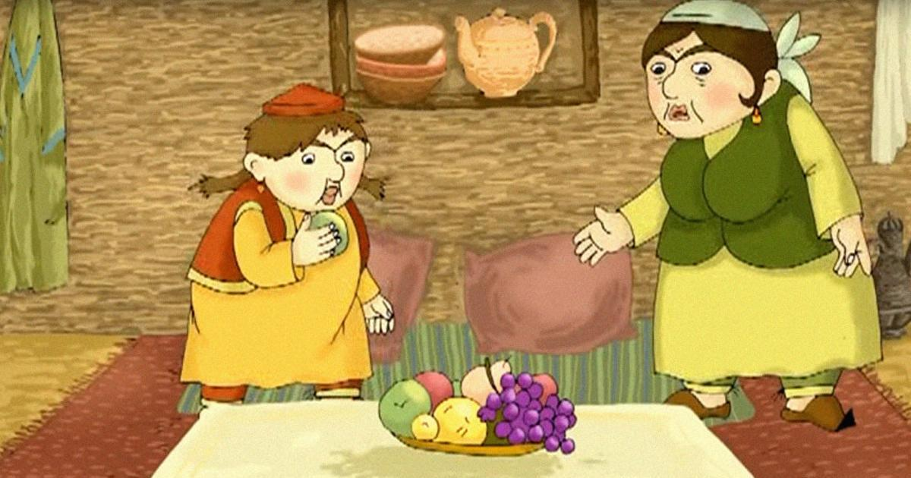

U o‘rmonda uzoq yurib, adashib qolibdi.
O‘rmon ichi qo‘rqinchli tusga kira boshlabdi. Ancha kech bo‘lib qolgan
edi-da. Nihoyat bir yorug‘lik ko‘rina boshlabdi. Zumrad o‘sha tomonga
qarab yura boshlagan ekan, bir kichkina uycha yoniga kelib qolibdi.
Derazadan mo‘ralasa, ichkarida bir kampir o‘tirgan ekan. Eshikni
taqillatib. ichkariga kiribdi. Salom beribdi. Keyin boshidan kechirgan
voqealami aytib beribdi. Kampir sehrgar ekan. U Zumradni iliq, mehribonlik
bilan kutib olibdi. -Xafa bo‘lma, men senga yordam beraman.

U Zumradni
ovqatlantiribdi, ovutibdi, erkalabdi. — Meni o‘z onamdek qabul qildingiz,
— debdi Zumrad. — Sizga qanday qaytarsam ekan, men ishdan qochmayman,
ishlaringizni jon-dilim bilan bajaraman. Zumrad kampirga juda yoqib
qolibdi. Uni erkalab, qo‘g‘irchoqlar beribdi, ertaklar aytib beribdi,
qiziq-qiziq kitoblar ko‘rsatibdi. Shunday qilib ular ancha kun birga
yashashibdi. Zumrad kelgach, uy saranjom-sarishta, chinniday toza bo‘lib
qoldi. Bir kuni kampir osh qilmoqchi bolib: Qizim, tomga chiqib o‘tin olib
tushgin, — debdi Zumradga. Xo‘p bo‘ladi, buvijon, — deb Zumrad tomga
chiqibdi. Tom juda baland ekan, u yerdan hammayoq ko‘rinar ekan. Qiz
atrofni tomosha qilib turib, qadrdon uyiga ko‘zi tushibdi. Yuragi uvishib,
yiglab yuboribdi. Nega yig‘layapsan, jon qizim? so‘rabdi kampir. —
Uyimizni ko‘rib qoldim, otamni sog‘indim, — deb Zumrad yig‘lab yuboribdi.
Kampir uni yupatibdi, osh eyishibdi, keyin ertak aytib beribdi. Qiz uxlab
qolibdi. Qizginam, o‘yinchoqlaringni yig‘ishtir. Seni uyingga jo‘nataman,
-debdi kampir.-Tomda qizil va oq sandiq bor.